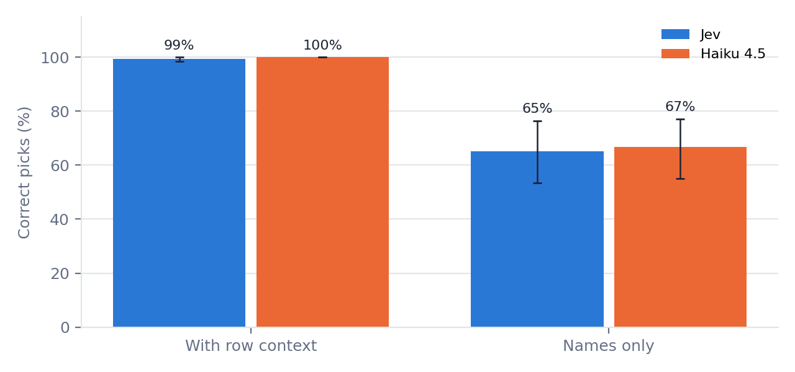
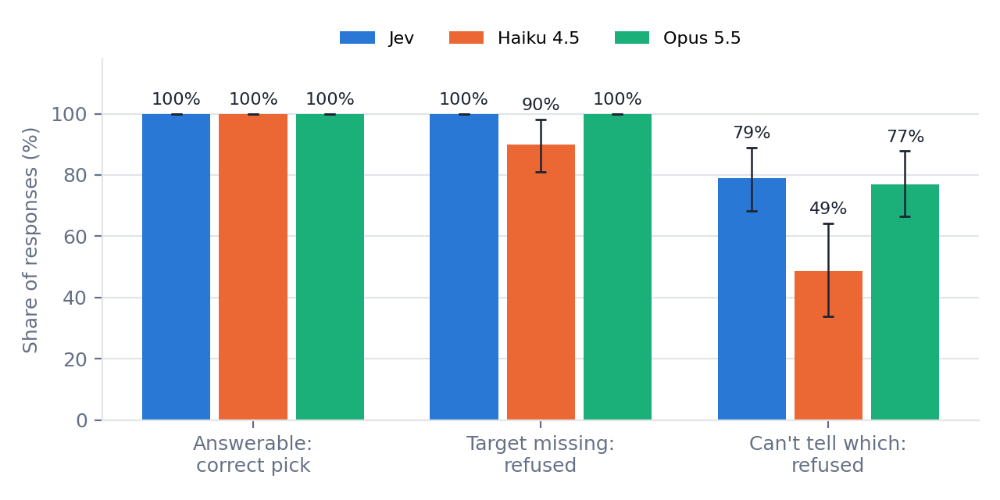
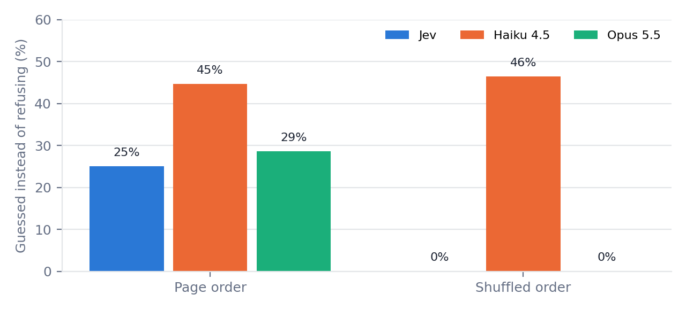
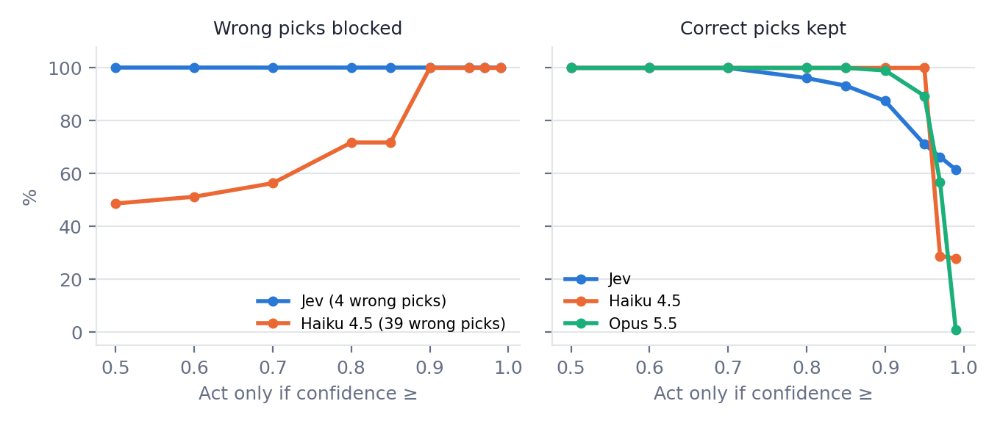

Can a Browser Test Agent Tell When It Can't Tell? Ambiguity and Calibration in Element Selection
Abstract. LLM-driven browser tests pick an element and act on it. When the element is missing, or several look-alike elements fit and nothing on the page separates them, the safe response is to refuse. A test agent that guesses instead produces a false pass or a false fail. I measured how often three engines refuse in those cases: TypeSafe's Jev, a narrow decision model, and Claude Haiku 4.5 and Claude Opus 5.5, each asked the same constrained question with an explicit "none" option. Across 42 recorded decision points shown five ways, all three were 100% correct when the answer was knowable. When the target was missing, Jev and Opus always refused and Haiku acted anyway 10% of the time. When the target could not be told apart, Jev refused 79% of the time, Opus 77% and Haiku 49%. The remaining guesses from Jev and Opus relied on list order and disappeared when the list was shuffled. Confidence scores were useful: a threshold would have blocked every wrong pick from Jev and Haiku with few or no correct picks lost. Jev and Opus were statistically indistinguishable on every measure, and Jev cost about 1% as much with one tenth of the latency. In a live study on a local app, a Claude Opus agent driving the browser through playwright-mcp also refused every missing target and could act on elements our scraper never listed, at about $0.15 and 11 seconds per task against $0.0001 and 0.25 seconds for Jev.
1. The problem
Testing an AI-generated business app with a browser agent comes down to many small decisions: which of these elements is the one the test step means? Generated apps make this harder than hand-built ones. They repeat identical controls on every row of a grid, they ship icon buttons with no accessible name, and they hide actions by role. A test that says "edit the ticket for Marcus Webb" can face three buttons all named "Edit".
Picking the right element is only part of the job. The other part is knowing when not to pick. If the Delete button is hidden for the current role, the correct test outcome is "this cannot be done", not a click on the nearest button in the right row. An agent that always acts turns an ambiguous page into a confident, wrong test result.
This paper asks: when the information needed is missing, do these engines refuse, or do they guess? And when they guess, can their confidence tell us?
2. Related work
Mind2Web frames web element selection as multiple choice over a filtered list of candidate elements, the same setup used here (Deng et al., 2023). It measures accuracy, not refusal. Argus benchmarks uncertainty estimates for screenshot-based GUI grounding across open-weight vision models (Kumar et al., 2026); this study uses DOM and accessibility-tree candidate lists and adds missing targets and an explicit refusal option. Agentic Abstention studies whether agents stop when a whole task cannot be done (Wen, Luo and Wang, 2026); this study looks at the single element decision inside a test step. The closest work on Jev itself is JEV-as-a-Judge (Li, Miao, Krishnan and Padman, 2026), which uses Jev as a first-pass LLM judge against 16 generative and reward-model judges, checked against blinded human evaluation. Jev came within 3 percentage points of the best judge on preference and factuality tasks at 0.36% of its cost, its errors concentrated in its low-confidence decisions, and a cascade that accepts confident verdicts and escalates uncertain ones kept 99% of the stronger judge's accuracy at lower cost. That paper is about grading outputs; this one is about choosing an action, where a wrong answer changes the app instead of a score. Work on clarification for coding and search agents asks when to ask rather than assume (Ambig-SWE, ClarEval, Structured Uncertainty guided Clarification). I did not find prior work that measures refusal and calibration for element selection in browser testing specifically.
3. Setup
Engines
| Engine | Who reads the page | What the model answers | Who acts |
|---|---|---|---|
Jev (jev-latest) | Our Playwright scraper | A typed choice: one index, or "none", with a confidence | Our Playwright code |
| Constrained Claude Haiku 4.5 | Our Playwright scraper | Structured output: an index limited to valid positions, or -1, plus a confidence from 0 to 1 | Our Playwright code |
| Constrained Claude Opus 5.5 | Our Playwright scraper | Same as Haiku | Our Playwright code |
| Claude Opus 5.5 agent (Study 3 only) | Its own playwright-mcp snapshots | Any browser tool call, or a CANNOT_FIND reply | playwright-mcp |
Jev and the constrained Claude engines see identical text for every candidate. Only the model differs.
flowchart TD
P["Page in Chromium, same URL and state"]
P --> S["Our scraper: role, name, nearby text"]
P --> M["playwright-mcp snapshot"]
S --> L["Numbered candidate list"]
L --> J["Jev"]
L --> C["Constrained Claude (Haiku or Opus)"]
J --> A{"Index or none?"}
C --> A
M --> AG["Opus agent"]
A -- index --> ACT["Our code clicks or selects"]
A -- none --> R["Refused"]
AG -- CANNOT_FIND --> R
AG -- tool calls --> ACT2["Agent acts itself"]
ACT --> LOG["Scored from the page's event log"]
R --> LOG
ACT2 --> LOG
Figure A. Two ways of reaching a decision. The list-based engines only choose; our code reads the page and acts. The agent reads and acts itself. Every path is scored from what actually changed on the page.
"Constrained" means the model gets the same single question Jev gets and can only answer by choosing from the list. Opus 5.5 rejects forced tool calls, so every Claude condition uses structured output with a JSON schema instead. The Anthropic SDK used (1.7) no longer accepts sampling parameters, so no temperature was set; repeats measure how stable the answers are.
Where the data comes from
Every decision point starts from a real page loaded in a real Chromium browser by Playwright. The candidate list is what our scraper (get_interactive_elements) found on that page: each button, link, field and dropdown by ARIA role, its accessible name, and text from the element's surrounding containers. The correct answer is found by DOM identity (the candidate's node is the target node), never by a model. Screenshots of every page are in the repository.
The pages are my own ticket-admin test app (3, 10 and 25 identical rows), a self-hosted build of SauceDemo from its public source (saucelabs/sample-app-web@e0948dd), and, for Study 3, a small order-management app. All run on localhost so nothing external can change during a run.
4. Study 1: picking from a list is easy once the context is there
63 decision points, 3 goal phrasings each, 3 repeats, no refusal option. With the text around each element included, Jev was correct on 99.5% of picks and Haiku on 100%. Jev's only misses were one phrasing, "create the ticket", where it picked the New Ticket button instead of the open form's Submit.

Without that text, accuracy fell to 65% for Jev and 67% for Haiku, and on the ticket app's repeated rows to 13% and 18%. That drop is expected, since the information is simply not there. What matters is how they failed: they never said they could not tell. Jev picked the first matching button in 100% of its matching picks on those rows, and Haiku in 61%. That is the classic flaky-test failure: "click Edit" silently lands on the first row.
Study 1 showed accuracy is not the interesting question once context is present. Study 2 gives every engine a way to refuse and asks when it uses it.
5. Study 2: does it refuse when it should?
Design
42 decision points: 31 where the target is on the page and 11 where it is not. The missing cases are realistic: a Delete button hidden for the current role, a customer who is not among the rows shown, a product the store does not sell, a Remove button for an item that is not in the cart, a promo-code field that does not exist. Some goals refer to an element by its content, such as "edit the ticket for the Atlas Stationery store" or "add the $7.99 item to the cart".
Each point is shown five ways, which changes how much the engine can know:
| View | What each candidate shows | Answerable points (of 31 present) |
|---|---|---|
| none | Role and name, in page order | 3 |
| none-shuffled | Role and name, order shuffled | 3 |
| parent | Plus the text of the element's immediate container | 4 |
| grand | Plus two containers up, first 120 characters (the scraper's default) | 30 |
| wide | Plus three containers up, first 250 characters | 12 |
"Answerable" is computed from the text alone: the target's name is unique, or the key text (a customer name, product, price) appears in the target's line and in no look-alike's line. Missing targets are never answerable.
flowchart LR B["Edit button"] --> TD["parent: the table cell
text: 'Edit'
cannot tell rows apart"] TD --> TR["grand: the row
'102 Marcus Webb Atlas Stationery ... Edit'
can tell"] TR --> TB["wide: the whole table
every customer's name
cannot tell rows apart"]
Figure B. How much surrounding text each view attaches to the same Edit button on the ticket app. Only the middle level separates one row from another.
The table already shows one finding before any model runs. Too little context and too much context both make the page unanswerable. Three containers up, the text around each Edit button is the whole table, so every row's line contains every customer's name. And the price in "add the $7.99 item" falls past the 120-character cut of the default view, but is inside the immediate container. Which slice of the page the scraper hands the model decides more than which model reads it.
Every engine answered every point in every view twice: 420 calls per engine, 1,260 in total, no errors.
flowchart TD
Q{"Is the target
on the page?"} -- no --> M{"Response"}
M -- none --> M1["Correct refusal"]
M -- picked --> M2["False action"]
Q -- yes --> K{"Can it be told apart
from the text shown?"}
K -- yes --> A{"Response"}
A -- right element --> A1["Correct"]
A -- other element --> A2["Wrong"]
A -- none --> A3["Over-cautious"]
K -- no --> U{"Response"}
U -- none --> U1["Correct refusal"]
U -- picked --> U2["Guess
lucky or wrong"]
Figure C. How each Study 2 response is scored. The right response depends on whether the answer was knowable from what the engine was shown.
Results
| Jev | Haiku 4.5 | Opus 5.5 | |
|---|---|---|---|
| Correct when the answer was knowable | 100% | 100% | 100% |
| Refused when it could have answered | 0% | 0% | 0% |
| Refused when the target was missing | 100% | 90% (81 to 98) | 100% |
| Refused when look-alikes could not be told apart | 79% (68 to 89) | 49% (34 to 64) | 77% (66 to 88) |
| Guessed wrong when they could not be told apart | 2% | 14% | 0% |
| Same answer on both repeats | 99.5% | 98.1% | 98.6% |
| Median latency per decision | 0.25 s | 0.92 s | 2.34 s |
| Cost for all 420 calls | $0.03 | $0.44 | $2.55 |
Rates are averaged per decision point; parentheses are 95% bootstrap intervals over points.

No engine was over-cautious: none refused a question it could answer. The differences are all on the other side. Haiku acted on 10% of missing targets. Its false actions were plausible neighbors: the Checkout button for "apply a promo code", the Status dropdown for a customer who was not on the page, the "Cart" button for removing an item that was not in the cart. Its confidence on those was 0.35 to 0.85.
List order leaks answers
Jev and Opus did not refuse every unanswerable case. With candidates in page order, they guessed on 25% and 29% of them, and those guesses were nearly always right. They were not reading the text: they matched the Nth "Add to cart" to the Nth product name elsewhere in the list. With the same list shuffled, both refused every time. Haiku guessed at the same rate either way, and after shuffling many of its guesses were wrong.

Whether an order-based guess is acceptable depends on the harness. Page order is real information, but it is fragile: a scraper change, a lazy-loaded row, or a re-sorted grid breaks the alignment silently. A shuffled control is a cheap way to find out whether an engine's accuracy depends on it.
Confidence as a gate
A test harness can act only when the engine's confidence clears a threshold, and treat anything lower as "cannot tell". Among the picks each engine made:
- Jev made 4 wrong picks, all with confidence below 0.5. A threshold of 0.5 blocks all of them and keeps every correct pick.
- Haiku made 39 wrong picks (wrong guesses and false actions), all below 0.9. A threshold of 0.9 blocks every one of them and still keeps all 104 correct picks.
- Opus made no wrong picks. Its confidence on its correct picks was high enough that a threshold up to 0.9 keeps 99% of them.

These thresholds were chosen on the same data they are evaluated on, and Haiku's confidence values cluster at a few round numbers, so the exact cut points should not be reused as-is. The direction is the useful part: for these engines, a low confidence on a pick was a reliable warning.
What JEV-as-a-Judge adds. Li et al. found the same pattern in a different job. Their Jev judge was close to the best judge on preference and factuality tasks, and where it fell short, it was mostly on the calls it was unsure about. Here, every wrong pick from Jev and Haiku sat in the low end of that engine's confidence range. Two independent results, one on grading and one on acting, point to the same property: Jev's confidence tracks when it is likely to be wrong, which is what makes a cheap first pass safe to use. Their paper also shows the right way to pick a threshold, which this study did not do: fix it on one set of data, then report results only on a held-out set. They also found Jev's gap was largest against elaborately written wrong answers. The browser analogue is a plausible neighbor on the right row, such as the Edit button when Delete is missing, which is exactly where Haiku failed here.
6. Study 3: live runs on a local app
Studies 1 and 2 measure the decision on a frozen page. Study 3 runs the whole loop live: load the page, read it, decide, act, and check what actually changed. It also adds the setup most teams use in practice, a Claude agent that drives the browser itself through the playwright-mcp server.
The app is a small order-management page served from localhost with fixed data: 25 orders over three pages, an identical "Edit order" icon and "Status" dropdown on every row, a Delete icon with no accessible name, customer names that are not exposed as links, and a Viewer role that hides every row action. Every engine starts from the same URL and page state. Outcomes come from the page's own event log, not from what the engine reported.
There are 15 tasks: 6 with the target present and visible to our scraper, 6 with the target missing, 1 for an order on page 2, and 2 where the target is on the page but invisible to our scraper (the unnamed Delete icon and the customer name that is not a link). Those last two are where the agent, reading its own snapshot, can see something the list-based engines cannot.
| Tasks | Jev | Haiku 4.5 | Opus 5.5 | Opus 5.5 agent |
|---|---|---|---|---|
| Target present (12 runs) | 12 correct | 12 correct | 12 correct | 12 correct |
| Target missing (12 runs) | 12 refused | 10 refused, 2 false actions | 12 refused | 12 refused |
| Invisible to our scraper (4 runs) | 4 refused | 4 wrong actions | 4 refused | 3 correct, 1 refused |
| Order on page 2 (2 runs) | 2 refused | 2 refused | 2 refused | 1 correct, 1 refused |
| Median time per task | 0.25 s | 1.0 s | 2.3 s | 11.2 s |
| Cost per task | $0.0001 | $0.0014 | $0.0086 | $0.15 |
2 repeats per task, 30 runs per engine. Time and cost for the list-based engines cover the model call only; the agent's cover its whole loop, about three tool calls per task.
Haiku's six bad outcomes follow one pattern: when the needed control was not in its list, it clicked "Edit order" on the right row. Asked to delete order #1003, whose Delete icon has no name, it opened the editor for #1003. Asked to refund order #1006, a feature the app does not have, it did the same. Each of those would register in a test log as a successful step. Jev and Opus refused all of them.
The agent never acted on a missing target, and its refusals named the reason, for example that the user was signed in as a Viewer and the row's actions cell was empty. Because it reads its own snapshot and can inspect the page, it also did things the list-based engines could not: it deleted order #1003 after checking the unnamed icon's HTML to confirm it was the delete button, and it opened Grace Liu's details by clicking her name, which is not exposed as a link. In one of the two runs it paged forward to find order #1017; in the other it reported that the order was probably on page 2 and stopped. Every one of its outcomes was either correct or a refusal. The trade-off is cost: more than 1,000 times Jev's cost and about 45 times its time per task.
One agent run on a missing order paged through the whole grid, then reported that the order did not exist. An early version of the scoring counted the paging as a false action. Paging, filtering and searching now count only when the task is about that move.
7. What this means for test design
- Always give the engine a way out. With a forced choice (Study 1), every engine guessed silently and favored the first match. With an explicit "none" option (Study 2), the better engines used it correctly and never over-used it.
- Gate actions on confidence. For all three engines, low-confidence picks were where the wrong ones were. A threshold turns a silent wrong click into a flagged step.
- The scraper matters as much as the model. The same page was answerable or not depending on how much surrounding text was attached, and too much text hurt as much as too little.
- Test for order dependence. Shuffle the candidate list. If accuracy holds, the engine is reading the text; if it collapses, it was aligning positions.
- Seeing more is not the same as guessing more. The playwright-mcp agent saw elements our scraper missed and still refused every missing target. Its cost and latency make it a better fit for the hard steps than for every step.
- A narrow model can be enough. On these tasks there was no measurable difference between Jev and Opus on accuracy or refusal, and Jev cost about 1% as much with a tenth of the latency. With 42 points, a gap of several percentage points could still go undetected. Haiku was cheap but guessed too often without a confidence gate.
A cascade, estimated from Study 3. Points 2, 5 and 6, together with JEV-as-a-Judge, suggest a design: let Jev handle every step, and send only the steps it refuses to the playwright-mcp agent. Replaying the recorded Study 3 runs that way, without any new calls, 18 of the 30 steps would have been escalated. The combined outcomes are identical to running the agent on every step (12 of 12 present targets correct, 12 of 12 missing targets refused, 3 of 4 scraper-blind targets correct), at 59% of the agent-only cost. This task set is deliberately heavy on hard cases; in a real test suite, where most steps are ordinary, far fewer would escalate and the saving would be larger. This is an in-sample replay, not a tested design. Testing it properly, with thresholds fixed in advance and fresh pages, is the next study.
8. Limitations
- Small and synthetic. 42 decision points in Study 2 and 15 tasks (30 runs per engine) in Study 3, on three pages I built or self-hosted. The intervals are wide, and differences of a few points cannot be separated. SauceDemo is a well-known practice site and may appear in training data.
- Answerability is defined from text alone. Guesses that used list order are counted as unanswerable guesses, which is a judgment call; Section 5 reports them separately.
- Confidence is not measured the same way. Jev returns a native confidence; Claude states one in its answer. Thresholds were picked and evaluated on the same data. JEV-as-a-Judge's approach, fixing the threshold on one set and reporting on a held-out set, is the right protocol for a follow-up.
- Prompt and interface choices. One prompt per engine, one version of each model, one scraper. The refusal rule text was the same for all engines, but Jev and Claude receive it through different interfaces.
- A task bug. One Study 3 task first asked to set an order to Shipped when it already was. The agent noticed and changed nothing; the list-based engines re-selected the same value. The task was replaced and its earlier runs excluded.
- No affiliation. I have no relationship with TypeSafe or Anthropic. All calls were paid with my own API keys.
9. Reproducibility
Everything is in bfalkowski/browser-agent-abstention: the recorders, the recorded decision points with screenshots, the runners, every raw result as JSONL, and make_paper_figures.py, which produces every number and figure on this page from those files. Runs were made on September 27 and 28, 2026. Total API spend for all studies, pilots included, was $9.75.
uv run python record_ambiguity.py --local-url ... --sauce-url ... uv run python run_ambiguity.py --engines jev,haiku,opus --max-usd 4 uv run python run_live.py --engines jev,haiku,opus,agent --repeats 2 --max-usd 6 uv run --with matplotlib python make_paper_figures.py --out writing/cant-tell
References
- Deng et al. Mind2Web: Towards a Generalist Agent for the Web. 2023.
- Kumar et al. Argus: Uncertainty Quantification for Computer-Use Agents. 2026.
- Wen, Luo and Wang. Agentic Abstention: Do Agents Know When to Stop Instead of Act? 2026.
- Ambig-SWE: Interactive Agents to Overcome Underspecificity. ICLR 2026.
- ClarEval: Evaluating Clarification Skills of Code Agents under Ambiguous Instructions. 2026.
- Structured Uncertainty guided Clarification for LLM Agents. 2025.
- Li, Miao, Krishnan and Padman. JEV-as-a-Judge: Accept When Confident, Escalate When Unsure. 2026.
- TypeSafe. Introducing System One models and Jev.
- Microsoft. playwright-mcp.
- Sauce Labs. sample-app-web (SauceDemo).